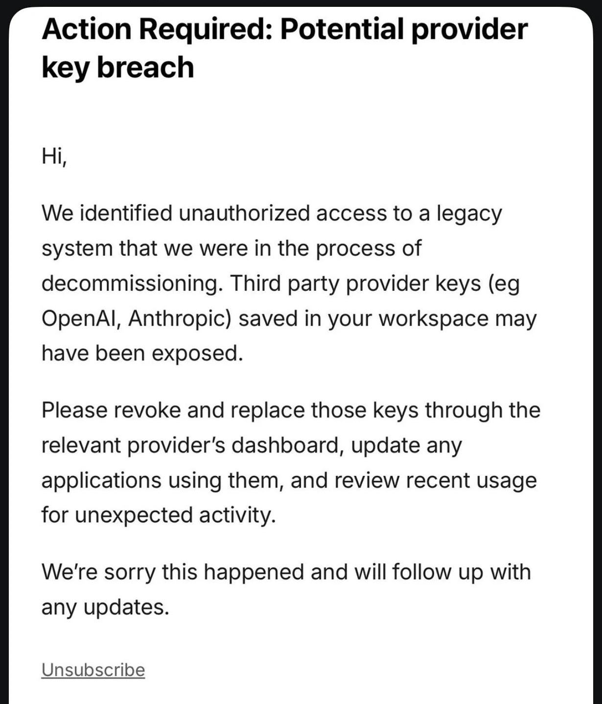
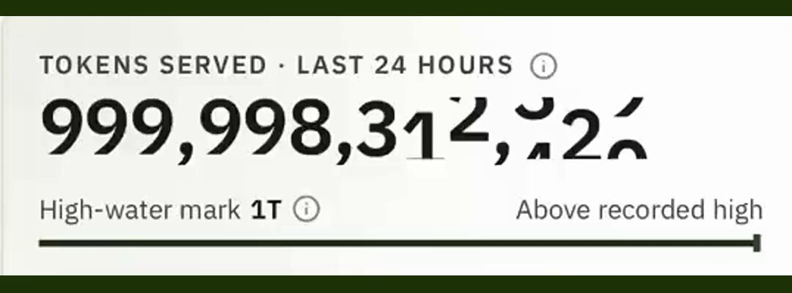

AI Intelligence Daily · 2026-10-19（周一）
今日一句话判断
专栏一｜新闻
本栏：国际 1 长条（OpenCode BYOK 漏报补收）+ 国际 1 长条（Anthropic Public Benefit Fund）+ 国际 1 短条（Reflection Beam 1T）+ 国内 1 短条（CodeBuddy 2.168.3→2.169.0）+ 1 合并短讯。按「重要度 → 用户相关性 → 时效」排序。快讯已 PUSH 项做结构化全文；不单独入栏：STEPX 第二批（10-18 10:13 媒体/微博预告后仍无 @StepFun_ai / stepx.com 一手开售核验）、Claude Code 2.1.303（仅 bugfix）、OpenCode RCA（仍无）。
1. OpenCode Console BYOK：蒸馏攻击相关安全事件，1.4% 用户第三方 Provider 密钥可能暴露（漏报补收）
发生了什么（事实）
- @opencode（核验时 flashes 记录 impressions ≈127 万）：称昨夜发生与「大规模蒸馏攻击」相关的安全事件，影响 1.4% OpenCode Console 用户；已向受影响用户发邮件；未收到邮件则未受影响；受影响子集是链接了外部 Provider 的用户；事件仍在进行，正与 Anthropic、OpenAI、Google 协同处置。编辑链首帖 2111516673953935833（17:56:19Z）。
- 用户邮件（多家媒体与 HN 转述，标题多为 “Action Required: Potential provider key breach”）：识别到对正退役的 legacy 系统的未授权访问；保存在 workspace 的第三方 Provider 密钥（如 OpenAI、Anthropic）可能已暴露；要求在各 Provider 控制台吊销并更换密钥、更新应用、检查近期用量。
- 产品边界（与官帖一致）：冲击面是 OpenCode Console（托管网关 / BYOK），不是本机 CLI/TUI/Desktop 本地密钥路径——本地 app 密钥不上传公司侧。Console 预算拦不住「用盗钥直连 Provider」的账单。
- 窗内处置回声（员工帖，非公司新闻稿）：Anthropic Claude Code 团队 @lydiahallie 称已与 OpenCode 协作并吊销其认为受影响的 Claude API 密钥，建议曾把密钥存进 OpenCode 的用户仍可自行换新；Google 侧有员工帖称已 block exposed API keys（以当事人帖与各 Provider 控制台为准，勿升格为实验室官方声明）。官方 trust.opencode.ai 仍无本事件完整 RCA / incident 页。
- 二手热度：HN 50133401 核验时约 941 分；Cyera / StepSecurity / Tech City Authority 等整理时间线与缓解步骤。
我的判断
- 主流 Coding Harness（opencode continuum ★21.6 万+）的托管 BYOK 凭证库被证实入侵；对「密钥存在第三方 harness / 网关」是即时否定——与 Work/Agent 引擎、多租户密钥隔离同一层。Daily 10-18 漏收，快讯已补推，本期必须结构化入栏。
- 蒸馏叙事尚未被独立取证证实，勿把动机写成定论；短期动作是轮换密钥与查账单，中期是 BYOK 是否应落在厂商托管侧。
往后看：官方 RCA、三家吊销规模、Console 加密存储与远程吊销改造；是否出现正式 GHSA。
对智能体互联网：强相关。跨 Agent / 跨 Provider 的委托凭证若集中存放在第三方 Console，等价于扩大 Trust 边界；密钥托管拓扑本身就是协议层要声明的能力。
对 Work / Agent 引擎：强相关。① 默认勿把生产 Provider 密钥写入第三方 BYOK 网关；优先本地密钥 / 自建网关或短时租约。② Console 类产品需按服务账号轮换、支出硬顶、按工作区最小权限。③ 对照 Memory/Skill/MCP 配置是否有「密钥进云」路径。
建议动作：① 排查是否使用 OpenCode Console BYOK；有邮件则立即在各 Provider 控制台吊销重发并查 10-16 起账单。② 跟踪 RCA 与 trust 中心。③ 把「Harness 不得持久化用户 Provider 密钥（或仅硬件加密 + 可远程吊销）」写入引擎安全基线。

来源：主 @opencode · trust.opencode.ai · HN 50133401 · 员工侧 lydiahallie · 快讯归档 flashes/2026-10-18-1118.md
2. Anthropic Public Benefit Fund：起手承诺 5% 股权，估值每涨 50% 可再加 2%；合计约 20% 股份导向公益
发生了什么（事实）
- Investing in the public benefit（Oct 18, 2026）：设立 Anthropic Public Benefit Fund（全资 LLC，非 501(c)(3)），在股东批准前提下今日起承诺公司股份的 5%；公司价值相对设定基线每增长 50%，董事会可酌情再增拨 2%。LLC 持有的 Anthropic 股权不用于游说或政治捐赠（美国内外）。
- 结构意图：公司内部已有安全/可解释性、生物医学、非营利折扣等「既公益又商业」活动；Fund 用于更灵活的大规模捐赠或定向分配。举例劳动市场影响——公司已承诺 $2 亿研究与应对，Fund 可走更大胆路径。
- 与既有承诺叠加：联合创始人创立时承诺捐赠其持股的 80%；员工股权捐赠匹配计划约一半员工参与；合计后约 20% 股份导向公益，另加估值里程碑可能追加的比例。未来数月将公布治理与估值里程碑，并发布 public benefit report。
- @AnthropicAI 核验时 impressions ≈206 万、likes ≈1.09 万。HN 50143755 核验约 48 分 / 十余条讨论。
我的判断
- 不是模型或 Desktop 发船，但是把「公共受益」做成可随估值放大的股权结构——比一次性捐赠声明更可审计。对采购与治理叙事有用；对 Runtime 工程无直接 API 变更。
- 评 A（公司级治理一手）；
desktop_work_agent_shipping不计。
往后看：估值基线与加仓细则；public benefit report；与 PBC 章程/优先股结构如何衔接。
对智能体互联网：弱–中。资金与治理层信号，不直接改协议字段。
对 Work / Agent 引擎：弱。关注其是否影响 Claude 企业条款或安全披露节奏即可。
建议动作：法务/采购收藏原文；工程侧无需改默认栈。

来源：主 官网公告 · @AnthropicAI · HN 50143755
3. Reflection Beam：24 小时服务 1T tokens，庆祝性重置全员限额（UPDATE）
发生了什么（事实）
- @reflection_ai：称 Beam 24 小时内服务了 1 trillion tokens；为庆祝重置所有人的限额；附短视频。核验时 impressions ≈6.0 万、likes ≈439。属已入栏 Beam 开放权重（Daily 10-17 / watch 73）的运营 UPDATE，非新权重发船。
我的判断
- 「1T / 日」是托管端点吞吐叙事，对开放权重对照评测有参考；限额重置是短期促销。评 B+。
往后看：限额是否回弹；Safety Report；mirror CLI 采用。
对 Work / Agent 引擎：中。可作为 Beam 托管端点压力测试窗口。

来源：主 @reflection_ai
4. 腾讯 CodeBuddy Code：npm 2.168.3 → 2.169.0（定时任务/防休眠/Web UI 工作台）
发生了什么（事实）
- @tencent-ai/codebuddy-code：2.168.3（CHANGELOG 日期 2026-10-18）新增定时任务默认 30 天有效期与指派、全局「防止系统自动休眠」、Web UI 输入区/队列等；2.169.0（CHANGELOG 标 2026-10-19，npm time 10-18 18:39Z）新增全屏工作台对话标签、浏览器地址栏/页签改进、插件入口收进头像菜单等。
- 非一线厂 Desktop/Work Agent 正式新客户端邀测或上线；
desktop_work_agent_shipping=0。快讯 23:21 已将 2.168.3 标为弱 A/B 留 Daily。
我的判断
- 定时任务有效期 + 防休眠 + 工作台浏览器，是 Coding CLI/Web 宿主向「长驻 agent」靠拢的产品细节。评 B。
往后看：是否出现独立 Desktop 安装包发船；与 Flash-1017 / WorkBuddy 工具调用稳定性。
对 Work / Agent 引擎：中。定时任务到期策略与防休眠权限是长驻 Runtime 必答题。
配图：changelog 无事件专图，不配。
来源：主 npm @tencent-ai/codebuddy-code CHANGELOG（包内）
短讯｜合并
- Claude Code 2.1.303（国际，B−）：npm 2026-10-18T21:15:23Z；CHANGELOG 仅「Bug fixes and reliability improvements」——不单开长条。
- StepFun Launch Night（SF，10-22）（国内，B）：@StepFun_ai 18:30Z 预告与 Together 合办 Step 5 Preview Launch Night——权重已在先日报入栏，本条为活动预告。
- Qoder day0 / 营销（国内，B−）：@qoder_ai_ide 等 Flash-1017 day0 与产品营销回声，非新模型一手。
- GitHub Security Lab × agent 找 Android 漏洞（国际，B）：@github 称用开源 agent 发现 24 个 Android 漏洞——安全 agent 叙事，非 Desktop 发船。
专栏二｜话题热议
- OpenCode Console BYOK（国际→双边，强热）：HN 50133401 ≈941 分；官方帖 impressions 百万级。焦点：Console vs 本地密钥路径、账单被盗刷、BYOK 是否应托管、蒸馏叙事可信度。
- Anthropic Public Benefit Fund（国际）：官方帖 impressions ≈206 万；HN 50143755 ≈48 分。讨论股权结构可审计性 vs 公关。
- DeepSeek Flash-1017 / Search-Fetch（国内，延续）：量子位等 10-17 稿仍在传播；本窗无新官方一手，热度从发船日回落。
- Reflection Beam 1T（国际）：官方庆祝帖 ≈6 万 impressions；属开放权重托管吞吐话题。
互动数字只引用 HN 与 X public_metrics 核验值，不编造。
专栏三｜开源雷达
| 项目 | 核验点（2026-10-19 ≈08:10 CST） | 看点 / 建议 |
|---|---|---|
| anomalyco/opencode（国际） | ★216561（+1266 vs 10-18）；安全事件见新闻 1 | 轮换密钥；盯 RCA |
| Tencent-Hunyuan/Hy-Memory（国内） | ★778（+212） | MemHub 热度加速；论文/隐私边界 |
| deepseek-ai/deepseek-harness | ★253064（+931）；latest 仍 0.2.0-rc.2 / next 0.2.1-rc.2 | 盯 latest→0.2.1；11-01 计费 |
| microsoft/mxc | ★2908（+16） | continuum |
| openai/math | ★15169（+65） | continuum |
| reflection-oss/mirror | ★180（+14） | 与 Beam 1T 合看 |
| DeepSeek-V4.1-Flash-1017 | HF likes 1333 / downloads 10233（API 核验） | 已入栏；继续复测 |
Desktop / CLI shipping 表
| 组件 | Daily 10-18 / 23:21 基线 | 现值（10-19 ≈08:10） | 结论 |
|---|---|---|---|
| 一线 Desktop 新客户端 | — | 无新品牌发船 | shipping=0 |
| @openai/codex | 0.163.0 / α.3 | 0.163.0 / 0.164.0-alpha.3 | 持平 |
| @anthropic-ai/claude-code | 2.1.302 | 2.1.303 | bugfix bump |
| @github/copilot | 1.0.98 / 1.0.100-1 | 同左 | 持平 |
| @tencent-ai/codebuddy-code | 2.168.3（23:21） | 2.169.0 | CLI/Web 功能 bump |
| @minimax-ai/code / Desktop | 0.6.12 / 3.1.3 | 同左；changelog 顶仍 v3.1.3 | 持平 |
| @deepseek-ai/dsh | 0.2.0-rc.2 / next 0.2.1-rc.2 | 同左 | latest 未切 |
| Kimi / ZCode / 小艺 / Step / Manus | 1.1.0 / 3.15.3 / 0.7.4 / 0.1.5 / 2.0.4 | 同左 | 持平 |
重点事件新进展
- OpenCode BYOK（55/90）：快讯 11:18 已 PUSH；本期全文入栏。trust 中心仍无 RCA；员工侧 Anthropic 吊销 / Google block 回声入事实段。
- STEPX（42）：10-18 10:13 第二批媒体/微博预告日后，@StepFun_ai 本窗无开售一手，stepx.com 仍营销壳；仅有 SF Launch Night（10-22）活动帖 → 仍待一手开售核验。
- 商务部 48 号（83）：mofcom 顶条仍 10-16；无窗内新稿；意见截止 11-15。
- DeepSeek Flash-1017 / Search-Fetch（86/89）：updates 顶仍 10-17；dsh latest 未切；11-01 计费临近。
- Reflection Beam（73）：1T/日 + 限额重置 UPDATE 入短条。
- MiniMax（88）：changelog 顶已为 v3.1.3（fixes）；CDN 持平。
- OpenRouter ElevenLabs 5 折：折扣窗至 10-19（本日到期）。
- PAP / TraeWork / 灵光 / MiMo：无升格级一手；TraeWork EOL 10-23；MiMo 旧 ID 10-21 10:00 CST；灵光 2.0 仍无官方。
今天正在形成的趋势
1. BYOK 托管成为明确攻击面：Console 存密钥 = 扩大凭证库半径；本地路径与托管路径必须在产品文案与威胁模型里拆开。
2. Provider 侧「批量吊销」成为事件响应标配：员工帖先行、公司新闻稿可能滞后——采购与安全团队要以控制台操作为准。
3. 公益股权结构化：比一次性捐款声明更可跟踪；治理叙事与产品发船脱钩但同日抢注意力。
4. 开放权重托管吞吐竞赛：Beam 用 1T/日讲产能；与 Flash-1017 Search/Fetch 按次计费同属「agent 基础设施可计量」。
5. Desktop 发船空窗延续：CLI/changelog 微 bump 不等于 Work Agent 新客户端。
对智能体互联网最值得吸收的东西
1. 委托凭证存放拓扑是 Trust 边界的一等公民：发现/授权协议应声明「密钥是否离开终端」「是否可远程吊销」。
2. 跨 Provider 协同处置（Anthropic/OpenAI/Google 被点名）预示：Agent 网络事故会同时打到多条身份与计费平面。
3. 公益/治理承诺不替代技术问责：PBF 与 BYOK 事故同日出现，提醒「公司使命叙述」与「密钥工程」不可互相替代。
对 Work / Agent 引擎最值得吸收的东西
1. 默认禁止生产密钥进入第三方 BYOK；自建网关或短时 STS；支出硬顶 + 异常用量告警。
2. 密钥轮换与会话失效要可编排：吊销后依赖该密钥的 agent 会话应失败可观测，而非静默重试烧备用密钥。
3. 长驻 agent：对照 CodeBuddy 定时任务有效期与防休眠——调度器需要明确 TTL 与电源策略。
4. 继续执行 48 号差距表与 Search/Fetch 11-01 配额（上期动作未过期）。
值得继续跟踪
- 事件：OpenCode Console BYOK / RCA，重点观察：trust 中心 incident、三家吊销规模、架构整改。
- 事件：Anthropic Public Benefit Fund，重点观察：治理细则与 public benefit report。
- 事件：STEPX 第二批，重点观察：官方一手开售；Launch Night 10-22。
- 事件：DeepSeek Search/Fetch 11-01 计费；dsh latest→0.2.1。
- 事件：商务部 48 号 11-15 意见截止。
- 延续：MiMo 旧 ID 10-21 · TraeWork EOL / MCPCon / Bolt E4B 10-23 · Copilot Default Enablement / StepFun Launch Night 10-22 · Mistral L4 10-31 · Argon 11-30 · ZCode CVE 修复 · Hy-Memory 复现 · CISA SI PDF。
未来信号
- 「Console BYOK」可能被保险与企业采购直接列入否决项——除非提供硬件加密、远程吊销与 SOC 报告。
- 员工个人 X 帖成为漏洞响应的「快通道」：正式新闻稿滞后时，安全运营仍须以控制台状态为准并留证。
- 开放权重 + 托管吞吐数字会成为下一轮融资与采购幻灯片标配；需用独立压测核对。
价格 / 订阅雷达
- 到期提醒：OpenRouter ElevenLabs 5 折至 2026-10-19（本日）。
- 临近：MiMo 旧 ID 10-21 10:00 CST 停用；DeepSeek Search/Fetch Harness/Claude Code/Codex 服务端工具免费至 11-01 00:00 CST（$0.75/千次成功）；MOFCOM 48 号意见 11-15；Argon introductory 11-30 后 $4/$20。
- 本窗无新的重大模型价改；Anthropic PBF 不改 API 价。
信源与方法
- 时间窗：2026-10-18 08:00 → 2026-10-19 08:00 Asia/Shanghai（≈00:00Z→00:00Z）。吸收 10-18 快讯 11:18 PUSH 与全日 SILENT 近窗（含 23:21 CodeBuddy near-miss）。
- 官方 vendor-check：见
flashes/.scan-2026-10-19-daily.md。摘要——P0 国际：Anthropic new(A)（Public Benefit Fund）；OpenAI/Google/Meta/xAI/Mistral/Cursor/AWS/HF 等无升格级 Desktop 发船。P0 国内：腾讯 CodeBuddy new(B)（npm）；DeepSeek/MiniMax/Kimi/ZCode/小艺/Step/STEPX 等无 Desktop 正式新发船；STEPX 第二批仍 no-new（待一手）。P1：opencode 已报强A（漏报补收）；reflection UPDATE(B+)（1T）；其余 P1 无线索强 A。desktop_work_agent_shipping=0。 - 连接器/工具：X
search_posts_all（公共读；部分时段 429 后重试）、npm、GitHub API stars、HN Algolia、WebFetch/curl 官网与 CDN yml。 - 配图：3 张——OpenCode 邮件截图（快讯资产）、Anthropic 公告 OG、Reflection 视频预览帧；均来自原文/官方媒体，非 AI 生成。CodeBuddy 等无事件专图未配。
- 脆弱面：国内机器之心/知乎等部分页登录墙或未返回有效正文（记 fail，不编造）；STEPX 第二批缺电商「已开售」一手截图；OpenCode 蒸馏动机与完整影响面以官方 RCA 为准；Anthropic/Google 处置以员工帖转述，非实验室 newsroom。